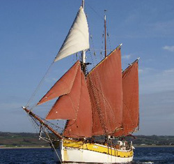

MARITIME EDUCATION, ENTERPRISE AND CAREERS

With the assistance of universities, marine and coastal research centres on the Island of Ireland, this zone will provide a fascinating insight into our coasts and the environment in which we live.
Recruitment experts will be on hand to provide advice on careers available in the maritime industry and the educational choices available to those interested in pursuing such careers.
Visitors will also get an insightful overview of how modern working ports operate and how they contribute to the world's transport and logistics of goods
Days : All weekend
The Tides: FRI 15:00, SAT 10:00
Water Safety: FRI 18:00, SUN 12:00